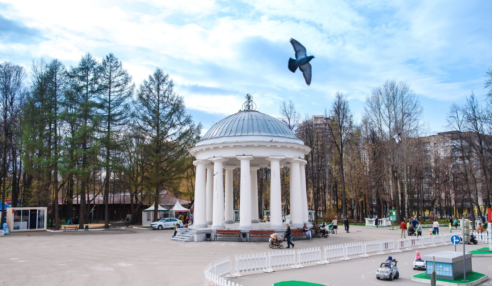

10. Ротонда в парке Горького
Пермь, парк имени Горького · Найти на Яндекс Картах

История места
Ротонду построили в 1824 году по проекту Ивана Свиязева к приезду императора Александра I. Она стала одним из узнаваемых архитектурных памятников Перми.
Эта остановка завершает рассказ о становлении города. От производственных сооружений на Егошихе мы пришли к общественному пространству губернской столицы, обладавшей собственной архитектурной традицией.
Значение для Перми и России
Ротонда сохраняет память о городской культуре XIX века и работе пермского архитектора. Она помогает увидеть, как промышленное и административное развитие дополнялось созданием мест для городской общественной жизни.